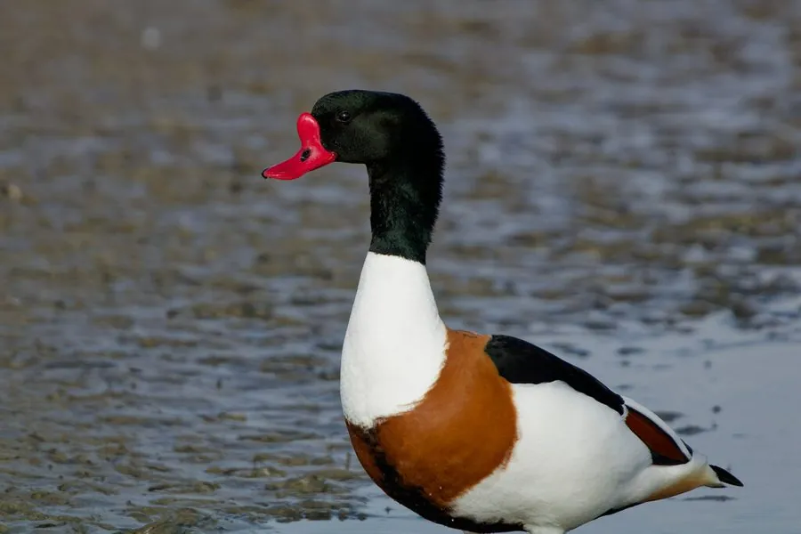

鸟类 · 动物界
翘鼻麻鸭 Tadorna tadorna

羽色黑白红三色分明的中型鸭类，繁殖期雄鸟喙基长出血红色瘤状突起，喜在盐沼与河口沙洲的旧洞中繁殖，分布于欧亚大陆。
- 分类
- 门脊索动物门纲鸟纲目雁形目科鸭科属麻鸭属
- 栖息环境
- 内陆盐湖、盐沼、河口滩涂、海岸沙丘与浅水海湾
- 地理分布
- 欧洲、中亚至中国北方繁殖；西欧、南亚与东亚沿海越冬
- 保护级别
- IUCN 无危（LC）；中国列为有重要生态、科学、社会价值的陆生野生动物
物种志
翘鼻麻鸭体长 58–67 厘米，翼展 1.0–1.2 米，体重 0.8–1.5 千克。羽色对比强烈：头颈墨绿至黑色，胸带栗红，腹部中央有一条宽阔的黑带，其余体侧与腹部白色，翼镜绿色，喙鲜红，腿粉红。繁殖期雄鸟喙基长出鲜红色的瘤状突起，形似翘起的鼻子，故得名“翘鼻麻鸭”。雌鸟瘤突较小，面部有白斑。
它们繁殖于欧亚大陆温带的内陆湖泊、盐沼与海岸沙丘，偏爱咸水或半咸水环境，常在废弃的兔洞、狐狸洞或石缝中营巢，也在芦苇丛中筑巢。食性杂，取食水生昆虫、螺、虾、小鱼、藻类与种子，常在浅水中用喙扫动泥面滤食。迁徙时结成大群，沿海岸与河口移动，在中国东部沿海越冬。每窝产 8–12 枚卵，由雌鸟孵卵约 28 天，雏鸟出壳后即随亲鸟下水。
形态与习性
- 体长约 58–67 cm，翼展 1.0–1.2 m
- 体重约 0.8–1.5 kg
- 食性水生昆虫、螺、虾、小鱼、藻类与植物种子
- 繁殖每窝 8–12 枚卵，雌鸟孵卵约 28 天
- 巢址多利用旧兔洞、狐洞、石缝或芦苇丛营巢
- 繁殖羽雄鸟喙基长出鲜红色瘤状突起
- 寿命野外约 10 年，最长记录超过 18 年
趣味知识
- 繁殖期雄鸟喙基会鼓起一个鲜红的瘤，像鼻梁上顶着一颗红宝石。
- 翘鼻麻鸭不爱自己挖洞，常直接占用兔子的旧洞穴孵蛋。
- 它喜欢咸水环境，在盐湖和河口滩涂上滤食小螺小虾。